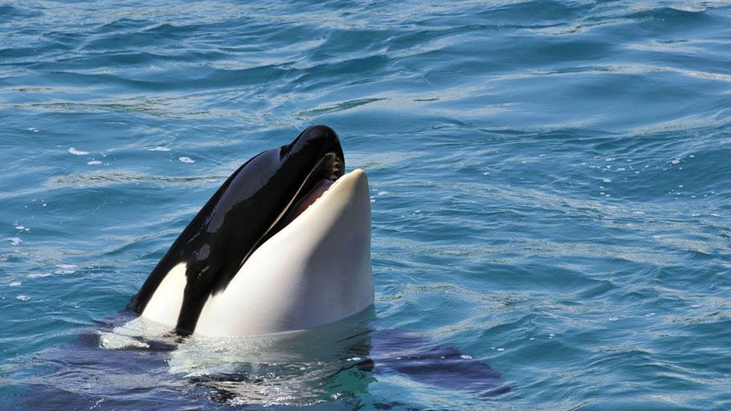
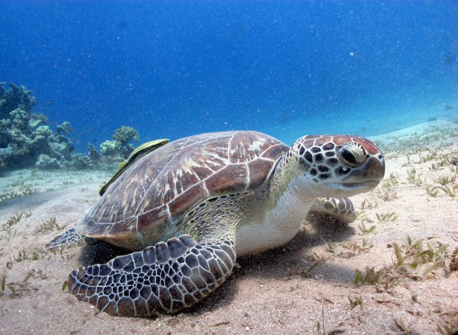

Animais Aquáticos
MenuSão animais que vivem em ambientes de água doce ou salgada. Exemplos:
-
Golfinho 🐬 - Mamífero marinho muito inteligente.

-
Baleia-azul 🐋 - O maior animal do planeta, podendo atingir mais de 30 metros de comprimento.

-
Orca 🦈 - Também conhecida como baleia-assassina, é um predador de topo que vive em grupos sociais.
 -
Tartaruga-marinha 🐢 - Réptil que vive nos oceanos e coloca seus ovos na areia das praias.
